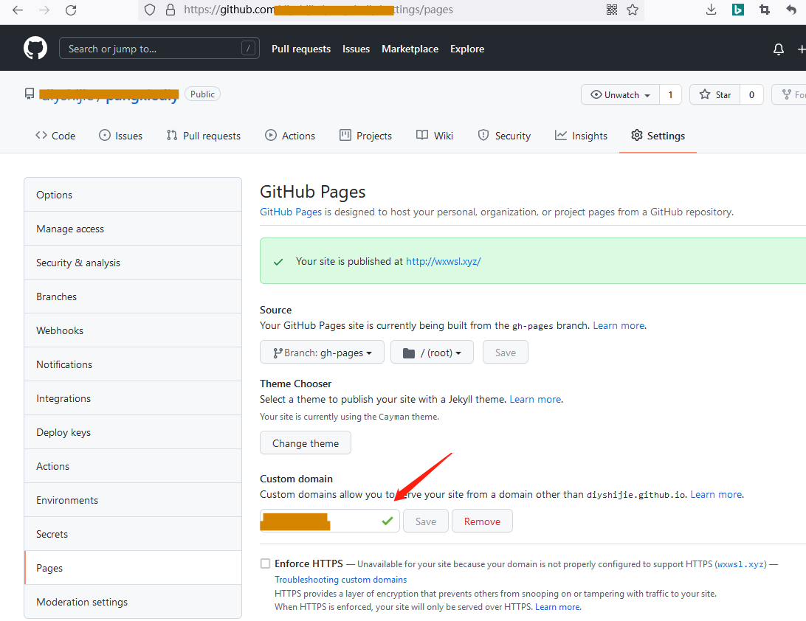
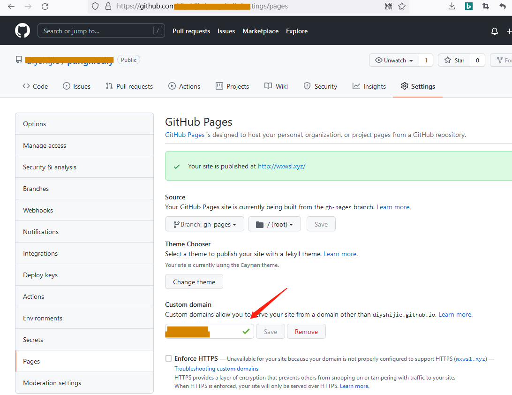
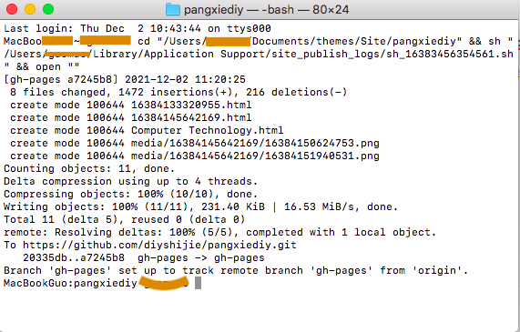

1、设置域名自定义DNS

2、在第三方DNS服务商设置dns解析
https://www.cloudflare.com/zh-cn/
等待解析生效

3、在Github设置自定义域名 
4、打开网址测试

1、设置域名自定义DNS
2、在第三方DNS服务商设置dns解析
https://www.cloudflare.com/zh-cn/
等待解析生效
3、在Github设置自定义域名 
4、打开网址测试
1、在Github建立一个仓库，全部共享，比如我的仓库名字是pangxiediy。 访问的域名是 https://diyshijie.github.io/pangxiediy
2、在MWeb建立静态网页。
3、在Mweb的偏好设置进行脚本的编写。
#!/bin/sh
git config user.name "name@gamil.com" git config user.email "email@gamil.com"
git add --ignore-removal . git commit -m "{{year}}-{{month}}-{{day}} {{time}}" git push -u origin gh-pages
有些朋友使用的分支是 master，我这里是 gh-pages。
4、在MWeb网站发布到Github。


终端上传的时候注意先生成网站，然后再打开终端粘贴，密码输入个人令牌。
5、查看网站。